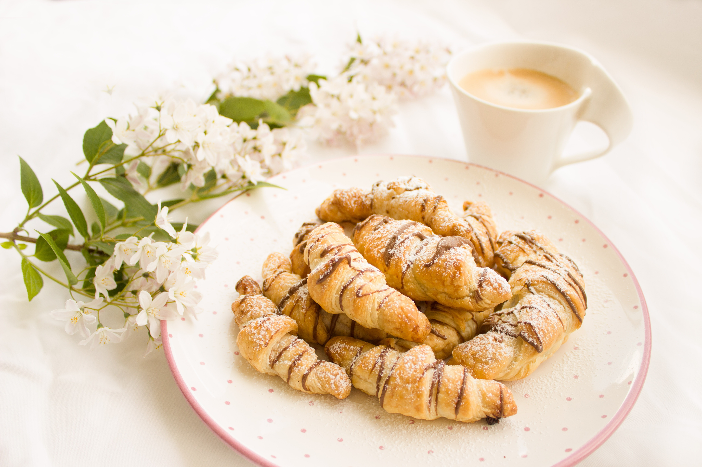

Croissant Bread Pudding Recipe

Description
This bread pudding recipe is unique because it uses buttery croissant
rolls instead of the traditional day-old French bread. The mix of
chocolate and toffee is amazing with the rich custard sauce added just
before serving
Ingredients
- 1 cup chopped pecans
- 10 large croissants, torn into pieces
- 4 cups milk
- 3 large eggs, slightly beaten
- 2 cups white sugar
- 1 ½ tablespoons vanilla extract
- 1 tablespoon ground cinnamon
- ½ teaspoon ground nutmeg
- 1 cup milk chocolate chips
- 1 cup toffee baking bits
Steps
-
Preheat the oven to 350 degrees F (175 degrees C). Lightly grease a
9x13-inch baking pan.
- Place pecans on a baking sheet.
-
Toast pecans in the preheated oven until golden brown, about 8 minutes.
Remove from oven and set aside. Reduce oven temperature to 325 degrees F
(165 degrees C)
-
Place torn croissants into the prepared baking pan. Pour milk over bread
and let soak for 10 minutes.
-
Beat eggs, sugar, vanilla extract, cinnamon, and nutmeg together in a
medium bowl using an electric mixer. Pour over bread mixture, blending
well, using your hands if needed. Add toasted pecans, chocolate chips,
and toffee bits. Mix well.
-
Bake in the preheated oven until the center is cooked through and top is
golden brown, about 1 hour.
-
While bread pudding is baking, bring sugar, half-and-half, and butter to
a boil in a saucepan over medium heat, stirring until sugar dissolves.
Reduce heat and let custard simmer for 5 minutes.
-
Remove custard from heat and let cool slightly. Pour in vanilla extract
and stir well.
- Remove bread pudding from oven and serve warm with custard sauce.